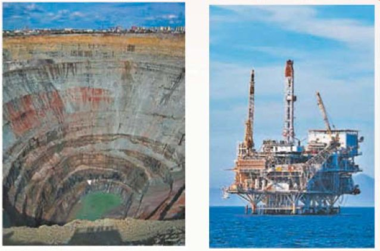
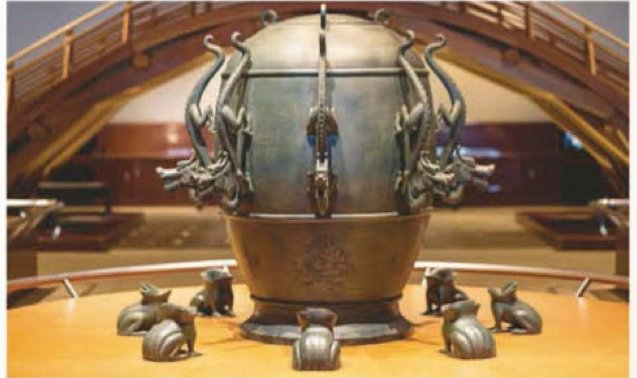

Литосфера и человек
Амина, это тема про то, что человек берёт у каменной оболочки Земли, что он с ней при этом делает и как её нужно беречь.
Оглянись вокруг. Дом стоит на земле, дорога лежит на земле, во дворе земля, за городом поля и горы. Всё это — литосфера, твёрдая оболочка Земли. Мы живём прямо на её крыше.
А теперь посмотри на телефон в руке. Металл в нём когда-то был рудой в горе, стекло — песком, провода — медью. Всё это достали из глубины Земли, из недр.
Но у такого соседства есть и другая сторона. Земля под ногами иногда вздрагивает, со склонов сползают породы, а там, где человек выкопал огромную яму, потом ничего не растёт.
Поэтому весь параграф — про две вещи: что литосфера даёт человеку и что человек делает с литосферой. Вот четыре части темы:
У каждого шага написано, на какой странице учебника искать. Внизу шага есть «Подробнее, как в учебнике»: там всё, что есть на этих страницах, ничего не пропущено. Сначала учи по коротким шагам, а перед уроком открой «подробнее».
Надпись вверху шага подскажет, откуда он: синяя — из учебника, золотая — задание учебника, оранжевая — сверх учебника (пересказ, словарик, игры, самопроверка). В «Содержании» шаги так же разбиты на группы.
Подробнее, как в учебнике · с. 94
- § 28 «Литосфера и человек» — последний параграф раздела «Литосфера — твёрдая оболочка Земли» (название раздела написано наверху с. 95).
- Наверху с. 94 — заставка параграфа: широкая фотография, слева горячий источник с ярко-синей водой и цветными краями, справа извержение вулкана с потоками раскалённой лавы. Прямо на ней напечатано название: «§ 28. Литосфера и человек».
- В левом верхнем углу с. 94 — надпись «Полярная звезда»: так называется серия, по которой сделан учебник.
- Параграф открывается строкой курсивом — это вопросы подтем: «Что значит литосфера для человека. Как человек влияет на литосферу». Дальше каждый такой вопрос становится заголовком.
- Все факты с. 94 разобраны на шагах 2—5, с. 95 — на шагах 4—8, с. 96 — на шагах 8, 16 и 17.
Территория и недра
Учебник отвечает по пунктам. Во-первых, литосфера — это территория. На земной поверхности проходит практически вся жизнь и хозяйственная деятельность людей. Здесь люди строят дома и дороги, пашут землю и пасут скот.
Во-вторых, человеку доступны недра. Недра — это то, что лежит под поверхностью, в глубине Земли. Люди издавна использовали минеральное сырьё — камень, глину, руду, уголь, нефть.
Причём не просто использовали: освоение многих районов Земли начиналось с поиска мест, богатых полезными ископаемыми. Сначала находили руду — потом рядом вырастал посёлок, а из него город.
Добыча полезных ископаемых, или горное дело, — один из старейших видов человеческой деятельности. Старше, чем письменность: люди копали кремень и медную руду ещё в каменном веке.
Литосфера — вся твёрдая оболочка Земли. Недра — её глубина, то, что скрыто под поверхностью и откуда достают сырьё. Территория — сверху, недра — снизу.
Подробнее, как в учебнике · с. 94 (начало)
- Заголовок подтемы: «Что значит литосфера для человека?»
- Литосфера для человека — это, во-первых, территория. На земной поверхности проходит практически вся жизнь и хозяйственная деятельность людей. Здесь они строят дома и дороги, пашут землю и пасут скот.
- Во-вторых, человеку доступны недра. Люди издавна использовали минеральное сырьё.
- Освоение многих районов Земли начиналось с поиска мест, богатых полезными ископаемыми.
- Их добыча, или горное дело, — один из старейших видов человеческой деятельности. Слова «горное дело» в учебнике выделены курсивом.
- Дальше на этой странице идёт абзац про грозные опасности — он разобран на следующем шаге.
Грозные опасности
С литосферой связаны не только богатства, но и грозные опасности. Ты уже знаешь из прошлых параграфов, к каким катастрофам могут привести землетрясения и извержения вулканов.
Учебник говорит спокойно и по делу: люди обязаны думать о мерах защиты. Например, в Японии, где угроза землетрясений велика, строят сейсмостойкие здания — такие, которые выдерживают подземные толчки. Учёные всего мира изобретают новые материалы и технологии для строительства в таких районах.
Почему важно, что под домом
Любое здание начинается с фундамента. А закладка фундаментов всех сооружений зависит от двух вещей: какими горными породами сложена территория и каков рельеф. На скале и на рыхлом песке дом ставят по-разному.
Дальше учебник называет примеры:
- на крутых склонах подстерегает опасность оползней — породы могут поехать вниз вместе с тем, что на них стоит;
- у подножий гор нужно считаться с возможностью схода лавин и селей и с другими стихийными явлениями.
Литосфера для человека — источник полезных ископаемых и территория для жизни и ведения хозяйства. Вместе с тем с процессами в литосфере связаны многие катастрофические явления.
Дагестан тоже лежит в сейсмоактивном районе: подземные толчки у нас случаются, самое сильное землетрясение произошло 14 мая 1970 года, и после него в республике многое отстраивали заново. Поэтому правило учебника — «люди обязаны думать о мерах защиты» — про нас с тобой тоже.
Дома в таких районах проектируют с запасом прочности, как в Японии из учебника. А ещё у нас рядом горы: там, где склон крутой, дорогу и дом ставят с оглядкой на оползни и сели.
Чем сель отличается от лавины и оползня
Лавина — вниз по склону сходит снег. Сель — вниз по горному руслу идёт поток из воды, грязи и камней, обычно после сильного дождя или бурного таяния снега. Оползень — вниз сползает сам грунт вместе с тем, что на нём лежит. Общее у всех трёх одно: сила тяжести тянет вниз то, что лежит на крутом склоне.
Подробнее, как в учебнике · с. 94 (продолжение)
- С литосферой связаны и грозные опасности. «Вы уже знаете, к каким катастрофам могут привести землетрясения и извержения вулканов».
- Люди обязаны думать о мерах защиты. Например, в Японии, где угроза землетрясений велика, строят сейсмостойкие здания.
- Учёные всего мира изобретают новые материалы и технологии для строительства в таких районах.
- Закладка фундаментов всех сооружений, которые строят люди, зависит от того, какими горными породами сложена территория и каков рельеф.
- Например, на крутых склонах подстерегает опасность оползней.
- У подножий гор нужно считаться с возможностью схода лавин и селей и с другими стихийными явлениями.
- Розовая полоса-вывод в конце подтемы: «ЛИТОСФЕРА ДЛЯ ЧЕЛОВЕКА — ИСТОЧНИК ПОЛЕЗНЫХ ИСКОПАЕМЫХ И ТЕРРИТОРИЯ ДЛЯ ЖИЗНИ И ВЕДЕНИЯ ХОЗЯЙСТВА. ВМЕСТЕ С ТЕМ С ПРОЦЕССАМИ В ЛИТОСФЕРЕ СВЯЗАНЫ МНОГИЕ КАТАСТРОФИЧЕСКИЕ ЯВЛЕНИЯ».
Шахты, карьеры, скважины
С развитием хозяйства люди стали вторгаться в глубины Земли. Способ выбирают по тому, что и как глубоко лежит.
Запомнить легко по одному вопросу: как глубоко лежит? Глубоко и твёрдое — шахта. Неглубоко и твёрдое — карьер, потому что так дешевле. Жидкое или газ — скважина.

Посмотри на левый снимок: карьер — это гигантская воронка со ступенями. По этим ступеням-уступам ездят самосвалы, и каждый из них размером с дом, хотя отсюда кажется точкой. На правом снимке — платформа в море: скважину можно бурить и прямо со дна моря.
Подробнее, как в учебнике · с. 94–95
- Заголовок подтемы: «Как человек влияет на литосферу?»
- С развитием хозяйства люди стали вторгаться в глубины Земли.
- Чтобы извлечь из недр руды или уголь, роют шахты.
- Если богатые пласты залегают неглубоко, гораздо дешевле вырыть карьер и вести добычу открытым способом (рис. 67).
- Для добычи нефти и газа бурят скважины.
- Извлечённые из недр полезные ископаемые доставляют на заводы и фабрики для промышленной переработки.
- Подпись к фотографиям на с. 95: «Рис. 67. Добыча полезных ископаемых в карьере и на море». Слева — снимок огромного ступенчатого карьера, справа — морской буровой платформы.
- Наверху с. 95 — колонтитул «ЛИТОСФЕРА — ТВЁРДАЯ ОБОЛОЧКА ЗЕМЛИ»: так называется весь раздел учебника, в который входит § 28.
Сколько человек берёт у Земли
А теперь главное число параграфа. Добывая полезные ископаемые с помощью современных машин, человек ежегодно извлекает из недр Земли около 100 млрд т горных пород.
Сто миллиардов тонн — это не укладывается в голове, поэтому переведи на людей. Нас на Земле примерно 8 миллиардов. Значит, на каждого человека, включая тебя и меня, приходится больше десяти тонн камня в год — как десять легковых машин.
И ещё одно сравнение, уже из учебника: только за один прошлый век из недр Земли пород извлечено больше, чем за всю предшествующую историю человечества. То есть за сто лет — больше, чем за все тысячи лет до этого.
Чем это оборачивается
При добыче полезных ископаемых происходит:
- истощение минеральных ресурсов — запасы в недрах уменьшаются, ведь новые руда и уголь так быстро не образуются;
- нарушение земель и отведение их под отвалы — насыпи пустой породы, которую вынули вместе с рудой;
- загрязнение: загрязняются воды, воздух, почвы.
Есть и ещё одно, неожиданное. Порой в подземных пустотах горных выработок происходит обрушение, и это может стать даже причиной землетрясения. Получается, что толчок под ногами иногда устраивает не сама Земля, а человек.
Почему из-за обрушения трясёт
Когда из-под земли вынули породу, на её месте остаётся пустота, а сверху давит вся толща. Рано или поздно свод не выдерживает и рушится вниз. Огромная масса камня падает разом — и по округе расходятся такие же колебания земной коры, как при обычном землетрясении, только слабее.
Подробнее, как в учебнике · с. 94 (конец) и с. 95 (начало)
- Добывая с помощью современных машин полезные ископаемые, человек ежегодно извлекает из недр Земли около 100 млрд т горных пород.
- Только за один прошлый век из недр Земли их извлечено больше, чем за всю предшествующую историю человечества.
- При добыче полезных ископаемых происходит истощение минеральных ресурсов, нарушение земель, отведение их под отвалы.
- Загрязняются воды, воздух, почвы.
- Порой в подземных пустотах горных выработок происходит обрушение, что может стать даже причиной землетрясения.
- Сравнение «больше десяти тонн на каждого человека» — наше, в учебнике его нет: оно только чтобы легче было представить 100 млрд т.
Как беречь и восстанавливать
Учебник не пугает, а сразу говорит, что делать. Люди обязаны чувствовать ответственность за сохранение природных богатств. Добываемое сырьё нужно бережно использовать, а нарушенные земли — восстанавливать.
Для этого проводят специальные работы — рекультивацию. Слово длинное, а смысл простой: вернуть земле нормальный вид после того, как из неё всё взяли.
Вторая беда — овраги
Портится земля не только от добычи. Распашка земель и вырубка лесов на склонах часто приводят к образованию и росту оврагов и к нарушению почв. Дождь на голом склоне не встречает корней, стекает ручьём и промывает канаву, а канава год за годом становится глубже.
Это значит, что площадь земель, пригодных для сельского хозяйства, уменьшается: там, где был овраг, пахать уже нельзя.
Для борьбы с оврагами создают лесные полосы, специальные подпорные стенки, валы и другое. Корни держат землю, а стенки и валы гасят силу воды.
Человек изменяет литосферу своей хозяйственной деятельностью и обязан заботиться о её охране.
Подробнее, как в учебнике · с. 95
- Люди обязаны чувствовать ответственность за сохранение природных богатств.
- Добываемое сырьё нужно бережно использовать.
- Нарушенные земли следует восстанавливать. Для этого проводят специальные работы — рекультивацию. Слово «рекультивация» в учебнике выделено курсивом.
- Например, отвалы выравнивают и на этом месте сажают деревья и кустарники.
- Выработанные карьеры превращают в пруды. Так можно создавать зоны отдыха для людей.
- Распашка земель и вырубка лесов на склонах часто приводят к образованию и росту оврагов, нарушению почв.
- Это значит, что площадь земель, пригодных для сельского хозяйства, уменьшается.
- Для борьбы с оврагами создают лесные полосы, специальные подпорные стенки, валы и др.
- Розовая полоса-вывод: «ЧЕЛОВЕК ИЗМЕНЯЕТ ЛИТОСФЕРУ СВОЕЙ ХОЗЯЙСТВЕННОЙ ДЕЯТЕЛЬНОСТЬЮ И ОБЯЗАН ЗАБОТИТЬСЯ О ЕЁ ОХРАНЕ».
- Объяснение про дождь на голом склоне — наше, чтобы было понятно, откуда берётся овраг; в учебнике сказано короче.
Первый сейсмограф
В учебнике здесь идёт рубрика «Стоп-кадр» — это как пауза в фильме, чтобы рассмотреть кадр подробнее. Называется она «Разрушительные землетрясения на Земле».
Начинается с прибора. Сейсмограф — прибор, способный улавливать колебания земной коры. Первый такой прибор был изобретён в Китае.
Выглядел он не как прибор, а как произведение искусства: большой бронзовый сосуд с маятником внутри. Снаружи — восемь голов дракона, и у каждого дракона в пасти был шар. Вокруг сосуда сидели восемь жаб с открытыми ртами.

Как он работал
При подземном толчке маятник внутри приходил в движение. Шар из пасти дракона выпадал — и падал точно в открытый рот одной из восьми жаб. Раздавался звон, и по тому, у какой жабы оказался шар, люди понимали, в какой стороне света случилось землетрясение.
Заметь: прибор не считал силу толчка и не предсказывал беду. Он отвечал только на один вопрос — откуда тряхнуло. Этого хватало, чтобы отправить помощь в нужную сторону.
Подробнее, как в учебнике · с. 95 (рубрика «Стоп-кадр»)
- Рубрика «Стоп-кадр», заголовок: «Разрушительные землетрясения на Земле».
- Первый сейсмограф — прибор, способный улавливать колебания земной коры, — был изобретён в начале прошлого тысячелетия в Китае (рис. 68). Слово «сейсмограф» в учебнике выделено курсивом.
- Это был большой бронзовый сосуд с маятником внутри.
- Снаружи находились восемь голов дракона, и у каждого в пасти был шар.
- При подземном толчке маятник приходил в движение, шар из пасти дракона выпадал в открытый рот одной из восьми жаб, сидящих вокруг сосуда.
- Это показывало, в какой стороне света случилось землетрясение.
- Подпись к фотографии: «Рис 68. Первый сейсмограф, изготовленный в Китае» (в книге после слова «Рис» точка не напечатана).
Землетрясения, которые запомнили
Первое, что говорит учебник, неожиданно успокаивает: землетрясения происходят на Земле ежедневно. Прямо сегодня их случилось несколько десятков. Просто сила большинства из них очень мала, и проходят они для нас незаметно.
Зато другие остаются в истории трагическими памятниками природных катастроф — о них люди помнят веками. Вот те, которые называет учебник.
Нажми на дату, чтобы прочитать, что случилось. Справа — страница учебника.
Все эти события собраны в рубрике «Стоп-кадр» на с. 95–96.
Подробнее, как в учебнике · с. 95–96
- Землетрясения происходят на Земле ежедневно. Только сила большинства из них очень мала, и проходят они для нас незаметно.
- Зато другие остаются в истории трагическими памятниками природных катастроф.
- Так, в 1556 г. Великое китайское землетрясение унесло больше жизней, чем любое другое. Тогда погибло около 830 000 человек. Некоторые районы совершенно обезлюдели. Фундаменты уцелевших пагод ушли под землю на 2 м.
- Землетрясение, произошедшее в 1897 г. в Ассаме (Индия), изменило облик территории на огромной площади, большей, чем у нынешнего государства Израиль.
- Не менее сильными оказались землетрясения в 1948 г. в Ашхабаде (Туркмения), в 2004 г. на острове Суматра (Индонезия), в 2011 г. в Японии.
- На этом рубрика «Стоп-кадр» заканчивается. Дальше на с. 96 идут вопросы и задания к параграфу (они собраны на шаге 16) и «Обобщение по теме» (оно на шаге 17).
Словарик: недра и добыча
ИграНажми на карточку, и она перевернётся. Словарик из двух частей, открой все карточки.
Словарик: что портится и как чинят
ИграВторая часть: отвалы, овраги, рекультивация и опасные явления.
Числа и даты
ИграВ параграфе много чисел, и за каждым что-то прячется. Нажми на число слева, потом на его разгадку справа.
Добыть, испортить, вернуть
ИграПрочитай карточку и выбери, о чём она: как человек добывает, что при этом портится или как землю восстанавливают.
От карьера к пруду
ИграЧто за чем происходит с одним куском земли — от поиска руды до зоны отдыха? Нажимай по порядку, от первого к последнему.
Найди лишнее
ИграТри из одной компании, одно чужое. Найди чужое.
Проверь себя
Вопросы из учебника
Это все вопросы и задания в конце параграфа, с теми же номерами и по тем же группам, что в твоём учебнике. Рядом с каждым написано, на каком шаге искать ответ. Отвечай своими словами: так лучше запоминается, и учитель услышит, что ты поняла, а не заучила.
Это я знаю
Какое значение для человека имеет литосфера?
Подсказка: у учебника ответ построен по счёту — «во-первых» и «во-вторых». Не забудь третье, про что в книге сказано отдельным абзацем: с литосферой связаны и опасности. А проверить себя можно по розовой полосе-выводу на с. 94.
Шаг 2 · Территория и недра Шаг 3 · Грозные опасностиКак человек изменяет литосферу?
Подсказка: сначала назови, как человек вторгается в глубины Земли (три способа добычи), потом — что при этом происходит с землёй, водой и воздухом, и не забудь про овраги от распашки и вырубки. Три шага — три части ответа.
Шаг 4 · Шахты, карьеры, скважины Шаг 5 · Сколько человек берёт Шаг 6 · Как беречьКакими полезными ископаемыми богата ваша местность?
Подсказка: этот вопрос про Дагестан, и в параграфе ответа нет — искать надо самой. Загляни в атлас: на карте полезных ископаемых каждое обозначено своим значком, найди значки на территории республики и посмотри, что они означают, в условных знаках карты. Ещё спроси взрослых, что добывают у нас рядом. А слова, которыми это описать — карьер, шахта, скважина, — на шаге 4.
Шаг 4 · Шахты, карьеры, скважиныЗачем человеку нужны знания о литосфере? В каких областях человеческой деятельности они особенно нужны? Приведите примеры.
Подсказка: подумай, кому без этих знаний никак. Строителю — он закладывает фундамент и должен знать породы и рельеф. Горняку и геологу — они ищут и добывают сырьё. Тем, кто строит в опасных районах, — вспомни пример Японии. Земледельцу — из-за оврагов. Все эти примеры есть на шагах 2, 3 и 6.
Шаг 2 Шаг 3 Шаг 6Почему человек должен нести ответственность за преображение литосферы? Свой ответ аргументируйте.
Подсказка: «аргументируйте» — значит привести доводы, по одному на каждую мысль. Четыре готовых довода-кирпичика ждут тебя на последнем шаге, но сначала попробуй назвать их сама.
Шаг 17 · Главный вопрос Шаг 5 Шаг 6Это я могу
Сформулируйте правила поведения во время: а) землетрясения; б) извержения вулкана. Чем обоснованы предложенные вами правила?
Подсказка: правила придумываешь ты сама, готовых в параграфе нет — вернись к прошлым параграфам про землетрясения и вулканы. Пиши каждое правило парой: что делать — и от чего это защищает («чем обосновано»). Помни главную мысль этого параграфа: люди обязаны думать о мерах защиты.
Шаг 3 · Грозные опасностиЭто мне интересно
На образование нефти в земной коре уходит 250 млн лет. Человек интенсивно использует нефть в хозяйстве. Подготовьте сообщение на тему «Меры, необходимые для эффективного использования нефти».
Подсказка: сравни два числа — сколько лет нефть образуется и сколько человек живёт. Отсюда и главная мысль сообщения. План может быть такой: зачем нужна нефть → как её добывают (шаг 4) → почему её нельзя тратить как попало (шаг 5, про истощение) → какие меры предложишь ты. Слово «меры» подсказывает: нужен список конкретных дел.
Шаг 4 Шаг 5 Шаг 6Задание после «Обобщения по теме» (без номера)
Из журналов выберите статьи, посвящённые исследованиям недр или рельефу Земли. Какая статья вас больше всего заинтересовала? Дайте краткую характеристику её содержания — аннотацию.
Подсказка: аннотация — это короткий пересказ, три-пять предложений: о чём статья, что в ней самое интересное и кому её стоит прочитать. Пересказывать всю статью не нужно. Само «Обобщение по теме», к которому относится это задание, целиком есть на последнем шаге.
Шаг 17 · Главный вопросПодробнее, как в учебнике · с. 96
- Все вопросы и задания с. 96 перечислены выше, в том же порядке и с теми же номерами, что в книге.
- Группы отмечены красными значками на полях: «Это я знаю» — задания 1—5; «Это я могу» — задание 6; «Это мне интересно» — задание 7.
- Ниже вопросов на с. 96 — рубрика «Обобщение по теме»: короткий пересказ всего раздела «Литосфера — твёрдая оболочка Земли». Он целиком приведён на последнем шаге.
- После обобщения напечатано задание без номера: «Из журналов выберите статьи, посвящённые исследованиям недр или рельефу Земли. Какая статья вас больше всего заинтересовала? Дайте краткую характеристику её содержания — аннотацию».
- В самом низу с. 96 — рубрика «Не забудьте отметить свои достижения».
Почему человек должен нести ответственность за преображение литосферы?
Это вопрос 5 из конца параграфа, и он собирает всю тему вместе. «Аргументируйте» значит: не просто сказать «потому что надо», а привести доводы. Вот четыре «кирпичика». Открой их, а потом попробуй ответить своими словами, не подглядывая.
Человек изменяет литосферу своей хозяйственной деятельностью и обязан заботиться о её охране.
Обобщение по теме · учебник, с. 96
После вопросов в учебнике идёт рубрика «Обобщение по теме» — весь раздел «Литосфера — твёрдая оболочка Земли» в одном абзаце. Вот он:
«Земной шар — многослойный. Он состоит из земной коры, мантии и ядра. Литосфера — наружная твёрдая оболочка Земли, состоящая из малоподвижных блоков — плит. Земная кора — верхняя часть литосферы, сложенная горными породами и минералами разного происхождения. Поверхность земной коры неровная, с чередованием гор и равнин — крупных форм рельефа. Рельеф — все формы твёрдой земной поверхности — образуется под совместным влиянием внутренних и внешних сил Земли. Под действием внутренних сил происходят движения земной коры, землетрясения, извержения вулканов. Внешние силы Земли разрушают и изменяют горные породы, переносят их и накапливают. Вода, ветер, живые организмы и хозяйственная деятельность людей — мощные внешние силы, преобразующие поверхность планеты. Внутренние силы Земли создают в основном крупные формы рельефа, а внешние силы — мелкие».
Обрати внимание на последнюю мысль: хозяйственная деятельность людей стоит в одном ряду с водой и ветром. Получается, весь § 28 — про то, что человек сам стал внешней силой Земли.
Литосфера даёт человеку и место для жизни, и богатства недр, но человек, добывая около 100 млрд т пород в год, сам стал силой, которая меняет земную поверхность, — поэтому он обязан беречь сырьё и восстанавливать нарушенные земли.